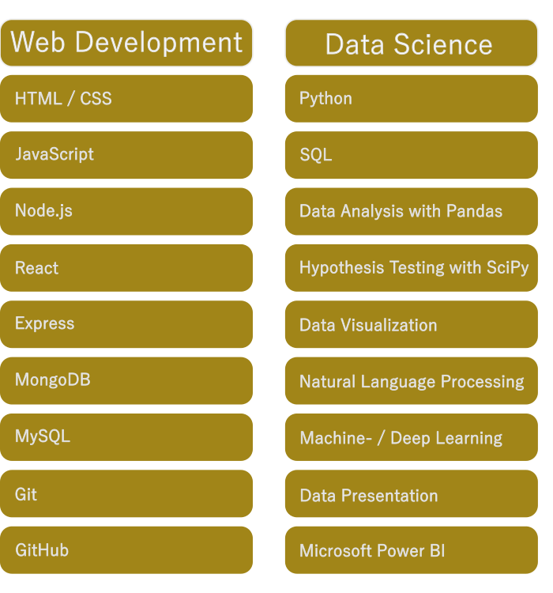
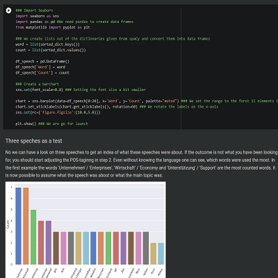
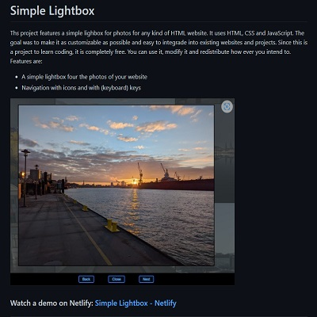

My motivation
I work in Customer Support for over ten years now. But I always followed my personal path to learn coding. How did it come about? I had bought my first book at that time, C++ Programming for Beginners. I bravely jumped in, and the first chapter was promising. I learned what variables are. And the very next chapter was about arrays and array methods. That's when the book lost me, and I knew: Learning programming will be a damn hard nut to crack for me.
What does learning programming have to do with customer support?
Imagine the following: A company needs a new process. This process is incredibly complicated and additionally requires the supporter to do a lot of math in a short time (e.g. rule of three). If I knew math, wouldn't I work at ESA? This problem led me to learn JavaScript and build a Windows app using the Electron framework. I learned programming to help my colleagues.
The first app I programmed for my colleagues worked and did what it was supposed to. But I hadn't fully understood the code yet. Thank you, Stack Overflow, for standing by me during this difficult time! So, I asked around my company:
Hey, do you know where I can learn JavaScript?
A colleague gave me a good tip: Codecademy. A platform to learn JavaScript. And many more languages and topics.
To motivate myself, I paid the annual fee and virtually the next day the world was quarantined. Now I had not only the necessary motivation and the subscription, but also a lot of time.
At that time, I made a deal with myself: The time you normally sit in the train, you sit down and study. Why learn only JavaScript? I wanted to go the extra mile. The curfew was helping here as well.
I had chosen the Web Developer Career path.
So every morning, after breakfast and even before work, I sat down and studied. Learning platforms like Codecademy make it very easy and interactive to learn new skills.
Want to find out?
Codecademy makes learning easy and fun. Learn to code in just a few weeks.
Open LinkMilestone & Skills
The great thing about a Career Path is that you are introduced piece by piece to all the topics that are the backbone of the Internet. I have learned a lot.
I had completed the Web Developer Career Path first. But after that, there was still so much subscription and lockdown left, so I completed the Data Science Career Path as well. Both topics complement each other quite well, by the way. Especially in the backend, there is a lot of overlap between the topics. Both courses are fun.
Skills I acqurired in these courses:

I took and successfully completed both courses in 2021. Since then, I have been continuously educating myself on both topics.
Projects
Learning is one thing. But then applying the new knowledge is quite another. Programming is a lot of fun for me. So I started with projects that help me apply and improve my new skills. Such projects help me set goals and achieve them. It's not enough just to have a goal. You also have to know how you want to get there. That's something that courses on the Internet don't teach you. But you can teach it yourself.
Learning Natural Language Processing
Right after I finished the Data Science Course at Codecademy, my interest in Natural Language Processing was awake. Computers make it possible to analyze language systematically. Thanks to Python and many great tools, it is possible to evaluate language statistically. I did this with a collection of speeches from Angela Merkel.

Do you want to discover this project and learn how to do speech analysis step-by-step? You can find the Jupyter notebook under this link on Google Colab: Learning Natural Language Processing
Simple Lightbox
So far, I have only reprogrammed projects from the learning platforms or from Youtube. Unfortunately, I have learned little in the process. The new approach was to set smaller goals and then always higher. The Lightbox was also a good idea because I like to take pictures.

The lightbox can also be tried below. It is not only a great idea to better showcase my images. It also taught me a lot about programming. You can find the project on Github: Simple Lightbox on Github
Hobby
Of course, I also want to use the opportunity here to present my passion. I like to hike, a lot and long. Sometime 10 years ago I decided to take a camera with me. This was a great way to capture all the moments and favorite places I got to visit.
"Photography is the hope of being able to freeze a moment forever."
And if I've already learned how to program my own lightbox, I'll take the opportunity to show a few of my photos. Besides, the opportunity is also ideal to present my beautiful hometown Hamburg.
.webp)
.webp)
.webp)
.webp)
.webp)
.webp)
.webp)
.webp)
.webp)
.webp)
.webp)
.webp)
.webp)
.webp)
.webp)
.webp)
.webp)
.webp)
.webp)
.webp)